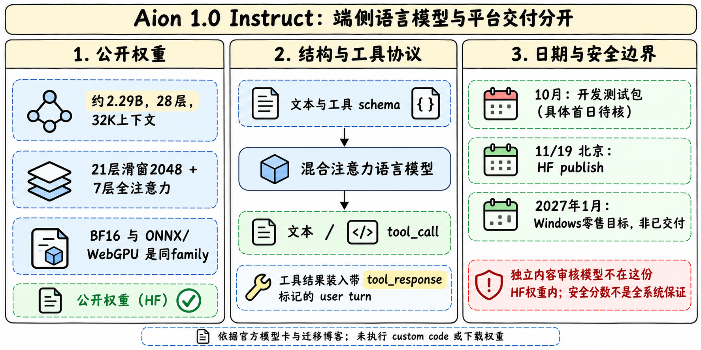
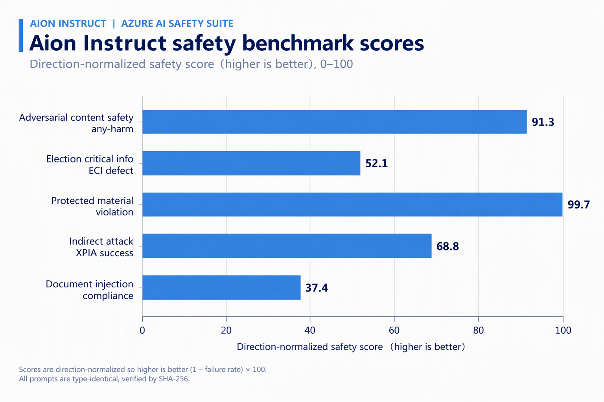

结构与训练线索

| 配置 | 值 |
|---|---|
| 规模/精度 | 约2.29B，BF16，tied embedding |
| 层数/宽度/FFN | 28 / 2048 /8192，SiLU |
| GQA | 24Q heads，8KV heads，head_dim128 |
| 注意力 | 21层SWA窗口2048；7层full attention |
| 长上下文 | 32768，full层YaRN factor16，RoPE theta32000 |
| 词表 | 200029 |
| 知识截止 | 2025-12，属于卡的声明 |
| 语言 | en/de/es/pt/it/fr/zh/ja，多语言训练约6% |
公开材料描述Phi Silica训练扩展、过滤公共高质量数据与合成数学/代码/常识；没有可复现的数量配比、完整recipe、训练算力或各项消融。2.3B是型号近似，不能以ONNX体积反推相同运行精度。
模板与工具协议
默认system preamble可以接前置用户system，并有current date字段；EOS为<|end|>。工具schema由专用tool标记围住，调用输出为tool_call中的JSON。结果进入带tool_response标记的user turn；改模板、日期、工具序列化和权限会改变行为。静态读取modeling与Jinja，未执行自定义代码。
BF16与ONNX/WebGPU合并同family。ONNX是部署格式/运行路径变化，不是训练升级；硬件、量化、浏览器WebGPU限制和CPU回退需要单独实测。工具执行仍要调用端校验schema与权限，不能由能输出JSON推导工具安全。
完整质量与安全证据
| Category | Benchmark | Score | Notes |
|---|---|---|---|
| Knowledge | MMLU | 55.15 | |
| Knowledge | MMLU-Pro | 33.35 | |
| Knowledge | MMMLU | 45.51 | Multilingual MMLU |
| Knowledge | GPQA | 28.18 | |
| Math | GSM8K | 74.91 | Loose matching |
| Math | GSMPlus | 49.56 | |
| Math | MATH-500 | 48.00 | |
| Instruction following | IFEval | 83.90 | Mean of prompt-level strict and instruction-level strict |
| Instruction following | IFBench | 32.00 | Prompt-level loose |
| Instruction following | Multi-IF | 64.70 | |
| Translation | chrF++ | 43.18 |
| Type | Causal language model (instruction-tuned) |
| Parameters | ~2.29B (tied input/output embeddings) |
| Layers | 28 |
| Hidden size | 2048 |
| MLP intermediate size | 8192 (SiLU) |
| Attention | GQA: 24 query heads, 8 key/value heads, head dim 128 |
| Attention pattern | Hybrid: 21 sliding-window layers (window 2048) + 7 full-attention layers |
| Positional encoding | RoPE (θ = 32000); YaRN scaling (factor 16) on full-attention layers |
| Context length | 32,768 tokens |
| Vocabulary size | 200,029 |
| Precision | bfloat16 |
| Knowledge cutoff | 2025-12 |
| File | Description |
|---|---|
model.safetensors | Model weights (bfloat16) |
config.json | Model configuration |
generation_config.json | Default generation settings |
configuration_aion_instruct.py | Custom configuration class (AionInstructConfig) |
modeling_aion_instruct.py | Custom model implementation (AionInstructForCausalLM) |
tokenizer.json, tokenizer_config.json | Tokenizer |
chat_template.jinja | Chat template |
GSM8K采用loose、IFEval为prompt strict与instruction strict均值、IFBench为prompt loose；chrF++43.18为翻译量尺。能用lm-eval时使用lm-eval，否则原始repo；带†的判分使用GPT4o。缺实际版本commit、完整采样与置信区间，未复测。

图为direction-normalized safety score（越高越好，(1−failure rate)×100），不是攻击成功率：adversarial any-harm91.3、ECI defect52.1、protected material99.7、indirect XPIA68.8、document injection37.4。提示类型一致并按SHA256校验，但缺原始逐题结果与CI；低的document injection尤其不能被99.7遮住。各项结果不等于整个系统安全。Windows迁移计划中的独立内容审核模型没有随这份HF语言模型一起提供，隐形文字水印也是平台要求/能力，不能自动赋予原始checkpoint。端侧运行的隐私优势以应用实际网络调用、日志与权限为条件。
平台时间线与研究判断
10月standalone测试包；11/19北京时间HF发布；最新博客预计12/4早期Insider与2027年1月下旬零售路径。旧Learn页面的11月说法保留为历史计划，不把它改写成已完成。没有本轮设备兼容性与账号实际安装证据。
适合作为小模型工具协议与端侧固定预算的研究候选。训练比较应冻结tokenizer/模板与工具工具结果表示；分别测八语言、无网络任务、失败工具返回、敏感输出及内容审核开关。不能把Windows全栈与裸HF模型的分数混为训练收益。
官方来源
关联与交付
📊 相关可视化: aion_poster_zh.html